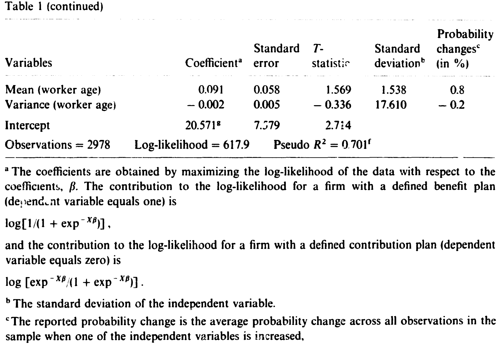
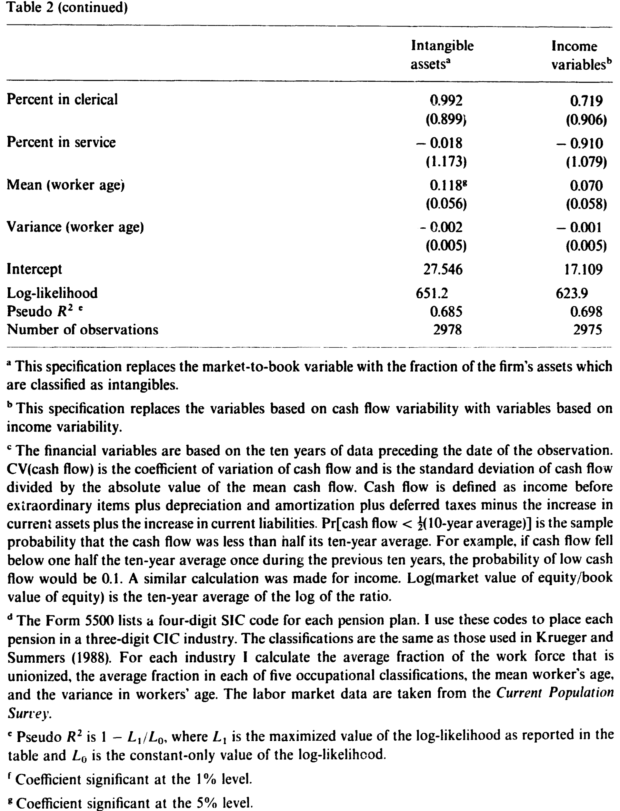
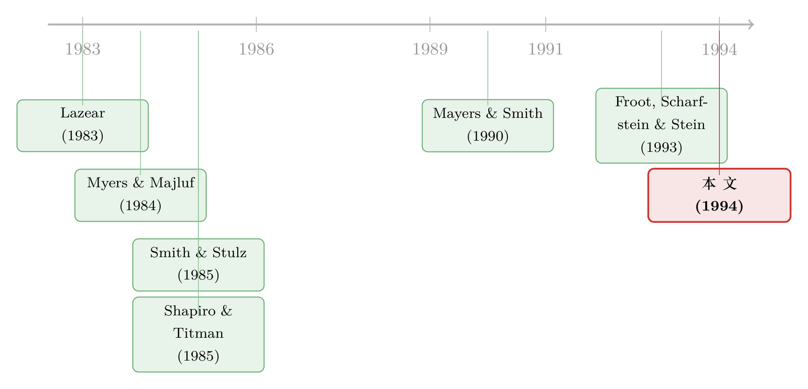

把养老金当成一道「经营杠杆」题来做
本文读的是 Petersen (1994, Journal of Financial Economics)：企业在「固定福利 (defined benefit, DB)」与「固定缴费 (defined contribution, DC)」两种养老金计划之间的选择，并不只是一道劳动经济学的题，更是一道财务题——DC 计划的缴费可以随现金流上下浮动，等于把固定成本换成了可变成本，从而压低公司的经营杠杆。现金流越不稳定、财务困境成本越高（无形资产越多）的公司，越倾向于选 DC。CV(现金流) 的系数约 −0.017（5% 显著），「现金流跌破十年均值一半」的概率系数约 −3.45、权益市值/账面值对数的系数约 −1.30（均 1% 显著）——而且这一切，在控制了工会、职业构成、企业规模之后依然成立。
1 一道被劳动经济学「垄断」了的选择题
先说一个大概不会让人意外的事实：几乎所有研究养老金的文献，都是从劳动力市场出发的。
为什么公司要给员工设养老金？标准答案有三条：用养老金来筛选员工（愿意长期留下的人才会看重退休福利）、用它来降低离职率（一旦员工被雇佣，养老金就成了拴住他的绳子）、再用它来鼓励到点退休（当员工年长、生产率下降时把他「请」走）。Lazear (1983)、Gustman 和 Steinmeier (1987) 把这套逻辑讲得很透：固定福利计划的好处是「后置」的，一个工人很大一部分养老金财富，是在职业生涯的最后十年里挣到的（Ippolito, 1986），所以你只要早退，就要损失一大块——于是 DB 计划天然地把人留住，实证上也确实和低离职率绑在一起（Mitchell, 1982）。
这套故事很完整，完整到几乎没给「财务」留位置。养老金被看成纯粹的人力资源工具，而公司的资产负债表、它的现金流、它面对的财务困境风险——统统被搁在一边。
本文要做的，正是把被搁置的那一半捡回来。
2 接着，一个自然的问题是：养老金到底欠谁的钱？
要讲清财务的角色，得先纠正一个常见的误解。
按照《雇员退休收入保障法》(ERISA) 的设计，养老金计划是「为雇员的专属利益」而设的，它和发起公司在法律上是分开的。但分开不等于无关。养老金计划的净负债，就是公司的负债。 计划缺口（underfunded）了，有偿付能力的公司必须补上；计划盈余了（overfunded），多出来的资产又会减少公司未来的缴费。换句话说，养老金这条线，从来就接在公司的财务那条线上（Bodie et al., 1987）。
既然如此，公司在 DB 与 DC 之间的选择，就不可能只关心「怎么激励员工」，它一定也关心「这笔钱我每年要不要、要交多少、能不能缓一缓」。
而这恰恰是两种计划最根本的区别所在。
- DB 计划：联邦政府给它套了上下限。最低缴费 (minimum contribution) 是为了防止公司故意少缴、然后破产赖账（背后还站着养老金担保机构 PBGC）；最高缴费 (maximum contribution) 则是国税局 (IRS) 为了防止公司滥用税前抵扣、在赚钱的好年份猛缴一笔把未来都覆盖掉。一旦缴费跌出这个区间，IRS 可以宣布计划「不合格」，缴费就不再免税。这意味着什么？意味着 DB 缴费是一笔几乎刚性的固定成本。
论文给了一个很具体的例子：假设养老金计划今年亏了 $15M，这笔损失要分摊到 15 年；在 10% 的利率下，公司今年以及之后的每一年，最低缴费都要被抬高约 $1.972M。亏一次，绑十五年——这就是 DB 的刚性。
- DC 计划：规则要松得多。公司只需要做出「实质性且经常性」的缴费即可，没有最低限额。最常见的 DC 计划是利润分享 (profit-sharing) 计划（占 DC 参保人的 46%），缴费往往就是工资的一个比例，而这个比例可以取决于公司当年的利润或净资产收益率（Allen, 1988）。好年份多缴，差年份——「公司可以省去任何缴费」。401(k) 也类似，公司今年手头宽裕，就把匹配率从四分之一提到一半。
一个例外是 货币购买 (money purchase) 计划：它的缴费是工资的一个固定百分比，因此和工资一样刚性，并不比 DB 更灵活。所以本文把它从样本里剔除了——在「灵活性」这个维度上，它根本不属于典型的 DC。
于是 DB 与 DC 的差别，被精确地翻译成了一个公司金融里再熟悉不过的词。
3 但真正关键的一步：把养老金看成「经营杠杆」
这就是本文的核心，也是它真正聪明的地方。
我们都知道资本结构理论 (capital structure theory) 讲两件事：最优的财务杠杆 (financial leverage)（该借多少债），以及最优的经营杠杆 (operating leverage)（固定成本与可变成本怎么配）。可是几十年来，对资本结构的实证检验，几乎全压在第一件事上——研究公司发多少债。第二件事，公司「要不要、以及如何降低自己的经营杠杆」，几乎没人做实证。一个罕见的例子是 Mayers 和 Smith (1990)，他们发现资产越集中（越「险」）的保险公司，越倾向于购买再保险——这本质上就是在降经营杠杆。
本文说：养老金选择，正是这样一次现成的、可观测的、降经营杠杆的决策。
逻辑链条是这样走的：
首先，当 M-M 假设成立时，改变现金流的波动性不创造价值。接着，一旦放松假设——税收是收入的凸函数（Smith and Stulz, 1985）、财务困境有成本、或者外部融资是有代价的——降低现金流波动就能创造价值了。税收那一条：因为亏损结转有限，期望边际税率随收入上升，把应税收入的方差压下去，就能降低税负的期望现值。困境那一条：给定一组固定的财务义务，现金流越抖，陷入困境的概率越高；把波动压下去，就压低了困境与破产的期望成本。
然后是最妙的一环——并非所有公司都同等受益。困境成本取决于资产的性质。无形资产（品牌、客户忠诚、成长机会）在困境中贬值得最快，给固定索取权人提供的抵押最差（Shapiro and Titman, 1985）。所以无形资产越多的公司，越珍视「把现金流波动压下去」这件事（Smith and Stulz, 1985）。
还有一条来自 Froot、Scharfstein 和 Stein (1993) 与 Myers 和 Majluf (1984)：当外部融资有代价，现金流低的时候公司可能被迫放弃一个本来 NPV 为正的项目。对冲——让现金流在它本会很低的时候补上来——正好能防止融资摩擦扭曲投资。（关于这条「风险管理为投资保驾护航」的逻辑，可参见《对冲，不是一道选择题，而是一台『内部汇率』机器》。）
把这几条合起来：选 DC 而非 DB，就是用可变的养老金缴费替换掉刚性的固定缴费，从而降低公司的经营杠杆、压低现金流波动。 所以本文要检验的假设就一句话——
现金流越不稳定、财务困境成本越高的公司，越可能选择 DC 计划。
于是反转出现了：这笔好处不是凭空来的。当公司把缴费变得更可变，它是在把风险从股东转移给员工。问题是，员工的人力资本本就高度集中、无法分散，一份缴费随公司现金流起落的养老金只会让他们更不分散。理性的工人应当为此索要更高的风险补偿，从而抬高 DC 的成本。那为什么现实中 DC 反而越来越多？本文给了两个出口：一是 Weitzman (1984) 与 Kruse (1991) 说的，工人愿意用「报酬的灵活性」去换「更稳定的就业」；二是更扎心的一条——他们根本没看懂合同。Mitchell (1988) 的调查发现，DC 计划里只有 49% 的工人答对了自己在 DC 计划中，能正确说出雇主缴费如何计算的不到三分之一。看不懂，自然也就谈不上为风险讨价还价。（关于员工持有自家 DC 计划资产的风险，另见《own-company-stock-in-defined-contribution-pension-plans-a》。）
4 识别策略：一个 logit，三个代理变量
怎么把上面的故事变成可检验的回归？
观测单位是单个养老金计划（一家大公司可能同时为时薪工和受薪工设不同的计划，因此会多次进入样本）。被解释变量是一个 0/1 哑变量：DB 计划取 1，DC 计划取 0。模型是一个逻辑斯蒂概率模型 (logistic probability model)，用极大似然估计：
这里有三个关键的设计要解释清楚。
第一，为什么要同时用两个波动指标？ CV(现金流) 是变异系数，它衡量的是对称的波动——好年份和坏年份一视同仁，且因为做了标准化，不会去捕捉「大计划更可能是 DB」这个众所周知的规模效应。但作者敏锐地指出：对冲的价值往往是不对称的。「相比好年份，过得『极好』的一年未必会改变公司想缴的钱；真正宝贵的，是现金流很低的时候能少缴或不缴的那个机会。」所以他又构造了 L_i——现金流跌破十年均值一半的样本频率，专门盯住下行风险。
第二，为什么用市值/账面值？ 高 market-to-book 的公司作为持续经营体更值钱，财务困境对它们的损失更大；而账面溢价的一部分本就是 Froot-Scharfstein-Stein 所说的成长机会。它是无形资产的代理。
第三，识别上最需要担心的是什么？ 是内生性与遗漏变量。论文用了三道防线（对应 Table 3 的三列）：
- 行业哑变量。不同行业的折旧率不同会系统性地影响 market-to-book，因此加入六个行业哑变量，让财务变量以「偏离行业均值」的形式进入。行业哑变量联合显著（
χ² = 24.6, p < 0.001），但加进去之后三个财务系数的量级不降反升。 - 只用主计划 (primary plans)。从财务角度看，主计划与次级计划的缴费要求并无不同；若只用主计划重估，系数基本不变。
- 用计划设立前的财务数据。这是针对内生性最干净的一招：为 1975 年设立、1983 年仍存续的计划，用 1965–1974 年的财务数据。既然反馈不可能从「未来的养老金决策」流回「过去的财务变量」，这个度量就免疫于内生性。
标准误差是渐近标准误。
5 数据
养老金数据来自 IRS Form 5500（「雇员福利计划年度申报表」）——每家公司为其每个参保超过 100 人的计划都必须逐年申报，表里有计划类型、参保人数、计划资产等信息。作者取了 1983–1986 年所有能与 Compustat 匹配上的 Form 5500，剔除非营利实体与多雇主计划，再剔除货币购买计划。财务变量一律用十年均值（用十五年均值重估结论类似），并除以 CPI 转成实际美元。劳动力市场变量（工会率、职业构成、工人年龄）来自 当前人口调查 (Current Population Survey, CPS)，按三位数 SIC 行业计算，行业划分沿用 Krueger 和 Summers (1988)。样本量约 2978 个计划（不同设定下在 1675–2978 之间）。
值得一提的一个时序事实：控制了计划设立年份后，整个分布以每年约 2.2% 的速度从 DB 向 DC 迁移（见表 1）——这与 1980 年代监管收紧（尤其 1987 年的 OBRA 进一步削弱了 DB 的灵活性）的方向一致。本文把这个长期趋势当作控制变量（计划设立年、报表填报年）放进了回归，以免把财务效应和趋势混为一谈。

Table 1: (continued)
6 主要结果：三个系数，一个一致的方向
核心结论可以用三个系数讲完（数字取自 Table 3 加入行业控制的列）：
CV(现金流)系数 ≈ −0.017（标准误 0.008，5% 显著）。现金流越波动 → 选 DB 的概率越低 → 选 DC 的概率越高。符号与假设一致。Pr[现金流 < ½ × 十年均值]系数 ≈ −3.451（标准误 0.533，显著）。这是三者中最强的：下行风险越大，越倾向 DC。这恰好印证了「对冲价值在低现金流时最高」的不对称直觉。log(权益市值/账面值)系数 ≈ −1.295（标准误 0.172，1% 显著）。无形资产越多、困境成本越高 → 越倾向 DC。
作为对照，规模与趋势变量的方向也都符合既有认知：总雇员数系数为正（0.290，大计划更可能是 DB，与「DB 行政成本固定、规模越大平均成本越低」一致，Lichtenstein, 1992）；计划设立年份系数为负（−0.116），再次确认了向 DC 的时间漂移。
稳健性这一头，作者还把 market-to-book 换成「无形资产占总资产比例」、把现金流变量换成基于收入的波动变量重估了一遍（见表 2），核心结论不变，伪 R² 约 0.69。

Table 2: (continued)
一个诚实的细节值得标出来：当改用计划设立前的财务数据（Table 3 第三列），CV(现金流) 的系数掉到了 0.000 且不再显著——也就是说，「对称波动」这个指标，在最干净的、免疫内生性的设定下失去了解释力。但下行风险（Pr 系数仍为 −1.591 且显著）和无形资产（log MB 系数 −0.569 且显著）这两条腿仍然站得住。这反而强化了作者的判断：真正驱动养老金选择的，是「坏年份能不能少缴」这种不对称的下行保护，而不是笼统的波动。
7 文献脉络
把这篇论文放回它的位置，能看清它在做一件「接缝」的工作。
一条线是劳动经济学的养老金研究：从 Lazear (1983) 的延迟报酬、到 Ippolito (1985, 1986) 的后置福利与留人激励、再到 Mitchell (1982)、Luzadis 和 Mitchell (1988) 的实证。这条线把养老金讲成纯粹的人力资源工具。
另一条线是公司风险管理理论：Myers 和 Majluf (1984) 指出外部融资有代价会导致投资不足；Smith 和 Stulz (1985) 系统地论证了对冲创造价值的三个渠道（凸税、困境成本、负债能力）；Shapiro 和 Titman (1985) 把无形资产与困境成本联系起来；Froot、Scharfstein 和 Stein (1993) 把对冲与投资政策统一进一个框架。这条线讲的是公司为什么、以及哪些公司更该降低现金流波动。

而把「降低现金流波动」落到一个可观测、可量化的真实公司决策上做实证的，长期以来几乎是空白——Mayers 和 Smith (1990) 用保险公司买再保险算一个，Petersen (1994) 这篇用养老金选择又算一个。它的贡献正在于：把两条原本平行的文献接在了一起，证明了一个看似纯属劳动力市场的决策，其实被公司的财务侧深刻地塑造着。（在更广的「公司到底怎么、对冲了多少」这个实证传统里，还可参见《公司到底用衍生品对冲了多少风险？》与《对冲的下半场：不是「要不要」，而是「怎么对冲」》。）
评论与延伸（Q&A + 研究方向）
Q：经营杠杆和财务杠杆到底有什么区别？这篇论文为什么强调前者？
财务杠杆是债务带来的固定利息义务；经营杠杆是经营中固定成本与可变成本的配比。两者都放大现金流波动、都抬高困境概率，理论上影响公司选择它们的因素应当相似。但实证文献几乎只研究「该借多少债」（财务杠杆），对「公司如何降低经营杠杆」的检验极少。本文的价值就在于找到了一个干净的经营杠杆决策——养老金缴费的刚性 vs. 灵活——来填这个空白。
Q：把刚性的 DB 缴费叫「固定成本」，把灵活的 DC 缴费叫「可变成本」，这个类比靠谱吗？
相当靠谱，但有边界。DB 缴费确有上下限的法律约束，但区间内仍有一定调整空间；DC 里的利润分享/401(k) 确实能随利润缩放，但货币购买计划就和工资一样刚性——所以作者专门把货币购买计划剔除了。这个剔除恰恰说明作者很清楚类比的边界，而不是一刀切。
Q：负的系数为什么就支持假设？会不会方向反了？
不会。被解释变量 = 1 表示选 DB。现金流波动、下行风险、无形资产的系数都为负，意味着这些量越大，选 DB 的概率越低，即选 DC 的概率越高。而假设正是「这些公司更倾向 DC」。方向完全一致。
Q：识别上最大的担忧是什么？
内生性与遗漏的劳动力市场异质性。养老金类型和财务状况可能由同一组未观测因素共同决定（比如某种「公司文化」既让它现金流抖、又让它偏好灵活报酬）。作者的最强回应是用计划设立前的财务数据——反馈不可能从未来流回过去。代价是
CV在这一设定下失去显著性，只剩下行风险和无形资产撑住结论。我认为这是诚实但也是一个软肋：核心证据收窄到了两个代理变量。
Q：风险被转移给了员工，这是「双赢」还是「占便宜」？
论文没有回避这个张力。理性的、不分散的员工本应索要更高补偿，从而抬高 DC 成本；现实中 DC 却在扩张，作者给的解释一半是「员工愿意拿报酬灵活性换就业稳定」（Weitzman, 1984; Kruse, 1991），一半是「员工压根没看懂合同」（Mitchell, 1988：仅 49% 答对自己在 DC 计划）。这意味着这笔财务收益，至少部分建立在信息不对称之上——这是个规范层面没有完全解决的问题。
Q：1987 年的 OBRA 进一步削弱了 DB 的灵活性，这会不会污染识别？
反而是个助力。OBRA 把 DB 变得更刚性，按本文逻辑应当加速向 DC 迁移——数据里确实有每年约 2.2% 的漂移。作者通过控制计划设立年份和填报年份，把这个总体趋势从横截面的财务效应里剥离了出去，所以趋势本身不构成对结论的威胁，反而是对机制的旁证。
几个可能的研究问题与提案
- 养老金灵活性 → 公司债定价。
- 【经济故事】如果选 DC 真的压低了公司的经营杠杆和现金流波动，那么 DC 公司的违约风险应当更低，信用利差也应更窄——这是把本文的「价值创造」主张直接拿到信用市场上验证。
-
【可行性】中。需要把 Form 5500 的计划类型匹配到发债公司，再接 TRACE 的二级市场利差。难点在 Form 5500 与债券发行人的匹配，以及控制经营杠杆的其他来源；识别可借助 OBRA 这类外生监管冲击做 DiD。
-
OBRA (1987) 作为自然实验的双重差分。
- 【经济故事】OBRA 外生地削弱了 DB 的灵活性。对那些「本就最该灵活」的公司（高下行风险、高无形资产），冲击应当更大，向 DC 切换的速度也更快。
-
【可行性】高。OBRA 时点清晰，本文样本横跨 1983–1986，可向后延展；按现金流下行风险分组做异质性 DiD，平行趋势可在 1987 前检验。这是把本文从横截面相关推进到准实验因果的最自然一步。
-
外资持有人与养老金灵活性偏好。
- 【经济故事】外资股东通常更分散、更看重可量化的财务风险，本国机构可能更受劳动关系约束。外资持股高的公司，是否更可能选 DC（更灵活、更友好于分散股东的风险配置）？
-
【可行性】中。需要把机构/外资持股数据（如 13F 或跨国持股库）接到养老金选择上，并处理「外资偏好本就是机构偏好」的混淆——这一点正是《「外资偏好」是个伪命题——他们只是机构而已》提醒过的陷阱。
-
下行风险 vs. 对称波动：哪个才真正驱动公司对冲？
- 【经济故事】本文一个被低估的发现是：在最干净的设定下，是「现金流跌破均值一半的概率」而非变异系数在起作用。这暗示公司对冲的是下行尾部，不是方差。这个区分可以推广到更广的对冲决策（衍生品、现金持有、债务期限）。
-
【可行性】高。用现成的现金流面板分别构造对称波动与下行半方差，看哪个更能预测各类对冲行为；识别上要小心两个度量的高相关，可用准实验冲击分离。
-
「员工看不懂合同」的福利成本估计。
- 【经济故事】如果 DC 的成本优势部分来自员工的信息不对称（Mitchell, 1988 的 49%），那么提升养老金信息披露/金融素养，理论上会抬高 DC 相对成本、放缓向 DC 的迁移。这能给「金融素养教育」算一笔公司金融层面的账。
- 【可行性】中偏低。需要披露规则或金融素养干预的外生变化，并能观测到企业层面的养老金选择响应；数据拼接难度较大，但若能找到州层面的披露改革，识别可行。
我的评判
这篇论文的贡献是「换了一个角度看一个老问题」，而且换得非常干净。它的真正价值不在某个系数有多大，而在于它第一次把养老金选择从劳动经济学的独占里解放出来，证明公司的财务侧——现金流波动、尤其是下行风险、以及无形资产带来的困境成本——是养老金类型选择的中心变量之一。把 DB/DC 之争翻译成「经营杠杆」，是一个让人读完会心一笑的好类比。
对识别，我的担忧集中在一点：最干净的「设立前数据」设定下，对称波动 CV 的系数归零了，核心证据收窄到下行风险和无形资产两个代理上。这两个代理本身都可能捕捉到别的东西（成长机会、行业周期、甚至某种未观测的管理风格）。本文用行业哑变量和事前数据做了诚实的努力，但横截面相关终究不是因果。
后续我最想看到的，是用 OBRA (1987) 把它推成一个准实验：一个外生削弱 DB 灵活性的冲击，对「本就最该灵活」的公司影响最大——如果向 DC 的迁移确实在这些公司里更快，那么本文的机制就从「相关」升级成了「因果」。其次，我很想看到这条逻辑被接到信用市场上：若选 DC 真的压低了困境风险，它应当在公司债利差里留下可观测的脚印。
参考文献
- Bodie, Z., Light, J. O., Mørck, R., & Taggart, R. A. (1987). Funding and asset allocation in corporate pension plans: An empirical investigation. In Issues in Pension Economics.
- Froot, K. A., Scharfstein, D. S., & Stein, J. C. (1993). Risk management: Coordinating corporate investment and financing policies. Journal of Finance 48(5), 1629–1658.
- Gustman, A. L., & Steinmeier, T. L. (1987). Pensions, efficiency wages, and job mobility. NBER Working Paper.
- Ippolito, R. A. (1985). The economic function of underfunded pension plans. Journal of Law and Economics 28(3), 611–651.
- Ippolito, R. A. (1986). Pensions, Economics and Public Policy. Dow Jones-Irwin.
- Krueger, A. B., & Summers, L. H. (1988). Efficiency wages and the inter-industry wage structure. Econometrica 56(2), 259–293.
- Kruse, D. L. (1991). Profit-sharing and employment variability. Industrial and Labor Relations Review 44(3), 437–453.
- Lazear, E. P. (1983). Pensions as severance pay. In Financial Aspects of the United States Pension System.
- Mackie-Mason, J. K. (1990). Do taxes affect corporate financing decisions? Journal of Finance 45(5), 1471–1493.
- Mayers, D., & Smith, C. W. (1990). On the corporate demand for insurance: Evidence from the reinsurance market. Journal of Business 63(1), 19–40.
- Mitchell, O. S. (1988). Worker knowledge of pension provisions. Journal of Labor Economics 6(1), 21–39.
- Myers, S. C., & Majluf, N. S. (1984). Corporate financing and investment decisions when firms have information that investors do not have. Journal of Financial Economics 13(2), 187–221.
- Petersen, M. A. (1994). Cash flow variability and firm's pension choice: A role for operating leverage. Journal of Financial Economics 36(3), 361–383.
- Shapiro, A. C., & Titman, S. (1985). An integrated approach to corporate risk management. Midland Corporate Finance Journal 3(2), 41–56.
- Smith, C. W., & Stulz, R. M. (1985). The determinants of firms' hedging policies. Journal of Financial and Quantitative Analysis 20(4), 391–405.
- Weitzman, M. L. (1984). The Share Economy. Harvard University Press.